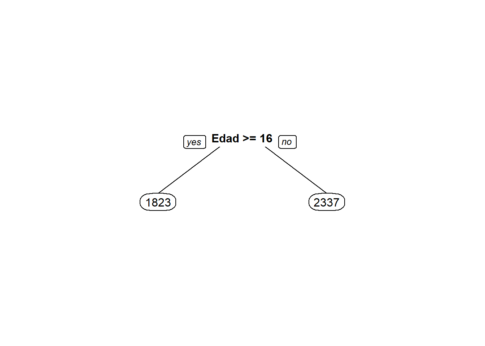
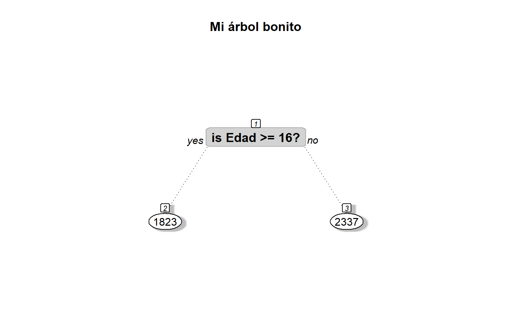
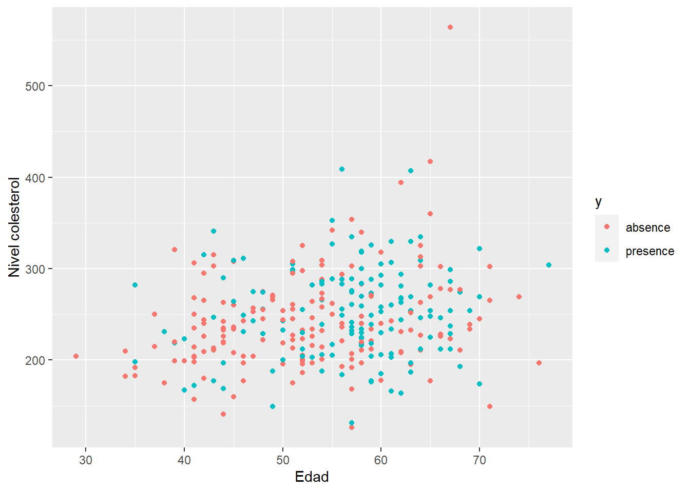

2 Regresión lineal versus árboles de regresión
2.1 Regresión lineal
El modelo de regresión lineal simple es uno de los más populares en modelación. Este modelo se puede resumir a continuación.
\[\begin{align} y_i &\sim N(\mu_i, \sigma^2), \\ \mu_i &= \beta_0 + \beta_1 x_i, \\ \sigma^2 &= \text{constante} \end{align}\]
2.2 Arboles de regresión
Un árbol de regresión es un árbol de decisión. Para conocer más sobre el tema se recomienda ver este video.
Las librerías en R para implementar árboles de regresión son:
library(rpart)
library(rpart.plot)2.3 Ejemplo 1
Como ilustración vamos a usar los datos del ejemplo 2.1 del libro de Montgomery, Peck and Vining (2003). En el ejemplo 2.1 los autores ajustaron un modelo de regresión lineal simple para explicar la Resistencia de una soldadura en función de la Edad de la misma.
A continuación el código para cargar los datos y una muestra de las 6 primeras observaciones de la base de datos, en total tenemos 20 observaciones.
file <- "https://raw.githubusercontent.com/fhernanb/datos/master/propelente"
datos <- read.table(file=file, header=TRUE)
head(datos) # shows the first 6 rows## Resistencia Edad
## 1 2158.70 15.50
## 2 1678.15 23.75
## 3 2316.00 8.00
## 4 2061.30 17.00
## 5 2207.50 5.50
## 6 1708.30 19.00Para crear un diagrama de dispersión que nos muestre la relación entre las dos variables usamos las siguientes instrucciones.
library(ggplot2)
ggplot(datos, aes(x=Edad, y=Resistencia)) +
geom_point() + theme_light()
De la figura anterior se ve claramente que a medida que aumenta la edad de la soldadura, la resistencia que ella ofrece disminuye. Adicionalmente, se observa que la relación entre las variables es lineal con una dispersión que parece constante.
¿Quién estima mejor? ¿un modelo de regresión lineal simple o un árbol?
rls <- lm(Resistencia ~ Edad, data=datos)
arb <- rpart(Resistencia ~ Edad, data=datos)arb <- rpart(Resistencia ~ Edad, data=datos, method="anova")
prp(arb)
¿Qué hay dentro de modelo de regresión lineal simple?
summary(rls)##
## Call:
## lm(formula = Resistencia ~ Edad, data = datos)
##
## Residuals:
## Min 1Q Median 3Q Max
## -215.98 -50.68 28.74 66.61 106.76
##
## Coefficients:
## Estimate Std. Error t value Pr(>|t|)
## (Intercept) 2627.822 44.184 59.48 < 2e-16 ***
## Edad -37.154 2.889 -12.86 1.64e-10 ***
## ---
## Signif. codes: 0 '***' 0.001 '**' 0.01 '*' 0.05 '.' 0.1 ' ' 1
##
## Residual standard error: 96.11 on 18 degrees of freedom
## Multiple R-squared: 0.9018, Adjusted R-squared: 0.8964
## F-statistic: 165.4 on 1 and 18 DF, p-value: 1.643e-10¿Qué hay dentro de modelo del arbol?
summary(arb)## Call:
## rpart(formula = Resistencia ~ Edad, data = datos, method = "anova")
## n= 20
##
## CP nsplit rel error xerror xstd
## 1 0.7480619 0 1.0000000 1.066376 0.2254468
## 2 0.0100000 1 0.2519381 1.066376 0.2254468
##
## Variable importance
## Edad
## 100
##
## Node number 1: 20 observations, complexity param=0.7480619
## mean=2131.358, MSE=84686.88
## left son=2 (8 obs) right son=3 (12 obs)
## Primary splits:
## Edad < 16.25 to the right, improve=0.7480619, (0 missing)
##
## Node number 2: 8 observations
## mean=1823.094, MSE=19439.95
##
## Node number 3: 12 observations
## mean=2336.867, MSE=22599.79Dijuemos el árbol con prp.
prp(arb)
Construyamos nuevamente el árbol pero explorando todas las opciones de la función prp.
prp(arb, main = "Mi árbol bonito",
nn = TRUE, # display the node numbers
fallen.leaves = TRUE, # put the leaves on the bottom of the page
shadow.col = "gray", # shadows under the leaves
branch.lty = 3, # draw branches using dotted lines
branch = .5, # change angle of branch lines
faclen = 0, # faclen = 0 to print full factor names
trace = 1, # print the auto calculated cex, xlim, ylim
split.cex = 1.2, # make the split text larger than the node text
split.prefix = "is ", # put "is " before split text
split.suffix = "?", # put "?" after split text
split.box.col = "lightgray", # lightgray split boxes (default is white)
split.border.col = "darkgray", # darkgray border on split boxes
split.round = .5) # round the split box corners a tad## cex 1 xlim c(-0.65, 1.65) ylim c(-0.75, 1.75)
A continuación las predicciones con ambos modelos.
pred_rls <- predict(object=rls, newdata=datos)
pred_arb <- predict(object=arb, newdata=datos)Dibujemos \(y_i\) versus \(\hat{y}_i\).
par(mfrow=c(1, 2))
plot(x=pred_rls, y=datos$Resistencia, main="RLS")
abline(a=0, b=1, lty="dashed", col="blue")
plot(x=pred_arb, y=datos$Resistencia, main="Arbol")
abline(a=0, b=1, lty="dashed", col="blue")
Vamos a calcular \(Cor(y_i, \hat{y}_i)\).
cor(datos$Resistencia, pred_rls)## [1] 0.9496533cor(datos$Resistencia, pred_arb)## [1] 0.8649057Calculemos ahora el Error Cuadrático Medio \(ECM=\frac{1}{n}\sum(y_i-\hat{y}_i)^2\).
mean((datos$Resistencia - pred_rls)^2)## [1] 8312.743mean((datos$Resistencia - pred_arb)^2)## [1] 21335.85¿Cuál método prefiere usted?